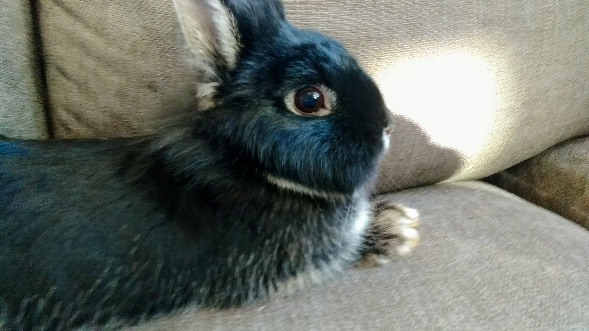
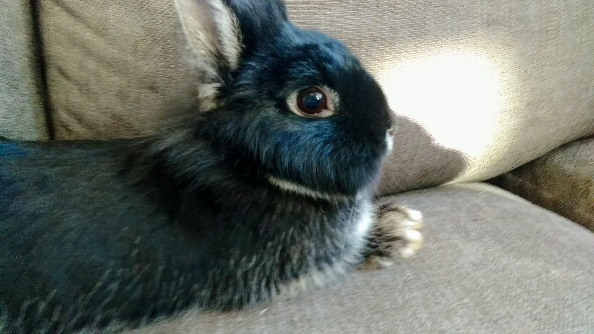

Vi säljer utekaninungar som är hälften teddyvädur, fjärdedels hermelin och fjärdedels lejonhuvad.
Detta innebär att de behöver mindre pälsvård än en vanlig teddyvädur.
De säljs tidigast vid 8 veckors ålder. Då är de väldigt tama och har då börjat lära sig löshoppning.
När en ny kull föds läggs det upp på hemsidan och vi lägger upp bilder när vi kan.
Om du är intreserad av någon kan du komma och hälsa på den när den är minst 4 veckor gammal, om du vill köpa en får du paxa den när du vill men du kan inte köpa den tills den är 8 veckor
Theresa och Tove Ronge
Våra kaniner:
 Stella,teddyvädur
 Baloo,hermelin lejonhuvad
Stella,teddyvädur
 Baloo,hermelin lejonhuvad